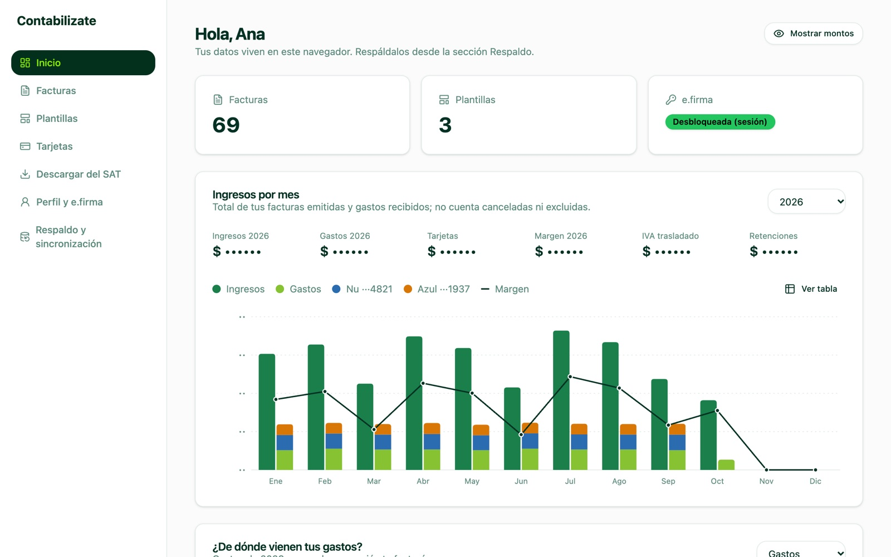

Dashboard
Ingresos, gastos y margen mes a mes
Calculado a partir de tus facturas emitidas y recibidas. Ve también lo que gastas con tarjeta y tu margen real.
- Oculta los montos con un clic
- IVA trasladado y retenciones, ya calculados
- De dónde vienen tus ingresos y tus gastos
- Salud financiera: cuánto ahorras de verdad y por qué
- No cuenta facturas canceladas ni excluidas
